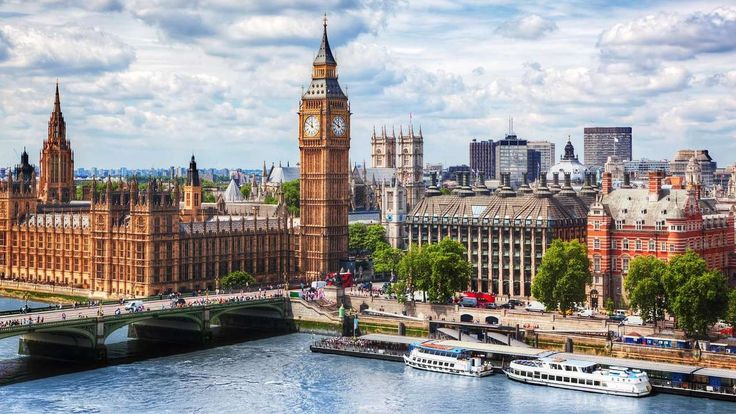
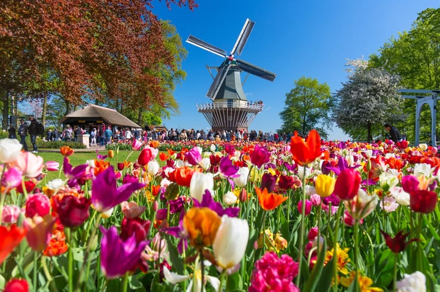
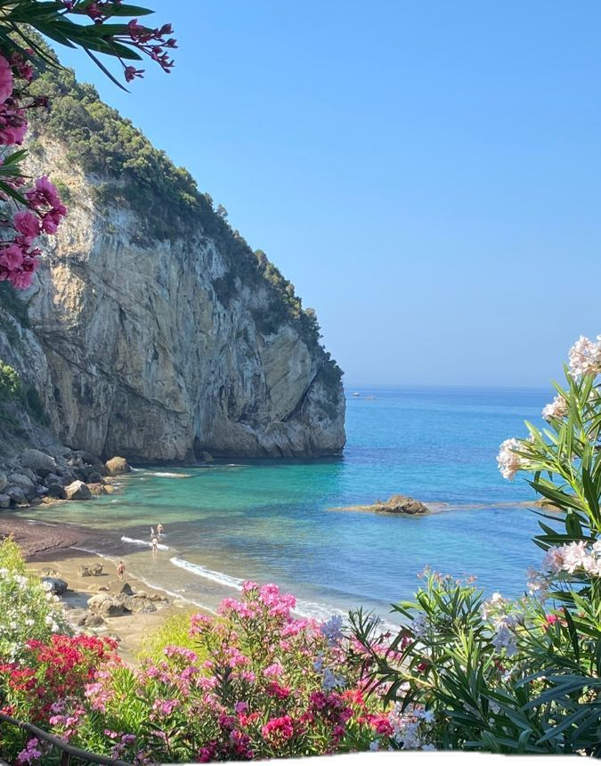
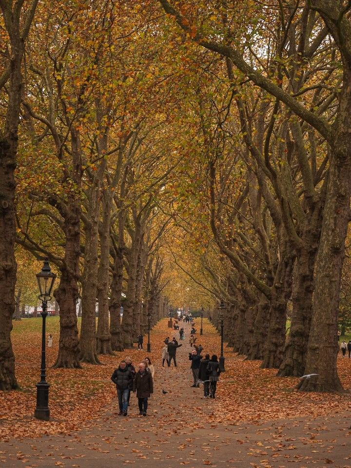

Pilih petualangan terbaikmu, mulai dari spesial United Kingdom hingga keliling benua Eropa!

London • Oxford • Bath • York • Edinburgh
Menjelajahi ikon kota London, universitas klasik Oxford, pemandian romawi kuno di Bath, hingga kastil megah di Skotlandia.

UK • Prancis • Belgia • Belanda • Swiss
Mulai dari London, naik Eurostar ke Paris, mengunjungi festival tulip Keukenhof, dan pemandangan Swiss.

UK • Prancis • Monako • Swiss • Italia
City tour London dan Paris, menyusuri pesisir Mediterania dan tempat bersejarah di Italia.

UK • Prancis • Jerman • Austria • Italia
Menikmati daun gugur di London, kawasan kastil tua Jerman, dan desa tepi danau Hallstatt.
UK • Prancis • Belanda • Swiss • Austria
Winter Wonderland London, pasar natal Amsterdam, dan main salju di Mt. Titlis Swiss.